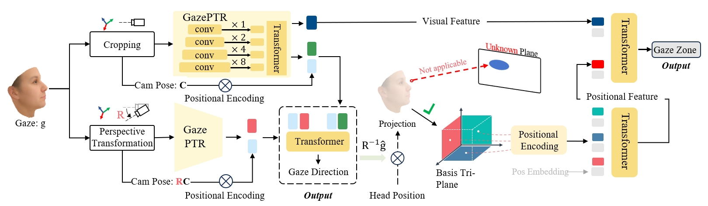
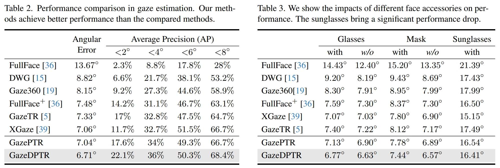

We introduce an in-vehicle vision-based gaze collection system. This system utilizes an infrared camera to capture human faces and is calibrated with a depth camera. Gaze targets are represented by red points on stickers affixed within the vehicle.
We propose a gaze pyramid transformer (GazePTR) that utilizes a transformer to integrate multilevel features. Expanding upon this, we propose a dual-stream gaze pyramid transformer (GazeDPTR). We rotate virtual cameras via perspective transformation to normalize images, and leverage camera pose to merge normalized and original images. we extend GazeDPTR for the downstream gaze zone classification task with a foundational tri-plane.
We evaluate our method in IVGaze dataset. Our work is built based on GazeTR. We define a new metric, Average Precision (AP). The AP of <k° means an estimation is considered correct if the angular error is lower than k°.
@InProceedings{cheng2024ivgaze,
author = {Yihua Cheng and Yaning Zhu and Zongji Wang and Hongquan Hao and Yongwei Liu and Shiqing Cheng and Xi Wang and Hyung Jin Chang},
title = {What Do You See in Vehicle? Comprehensive Vision Solution for In-Vehicle Gaze Estimation},
booktitle = {Proceedings of the IEEE/CVF Conference on Computer Vision and Pattern Recognition (CVPR)},
year = {2024},
}